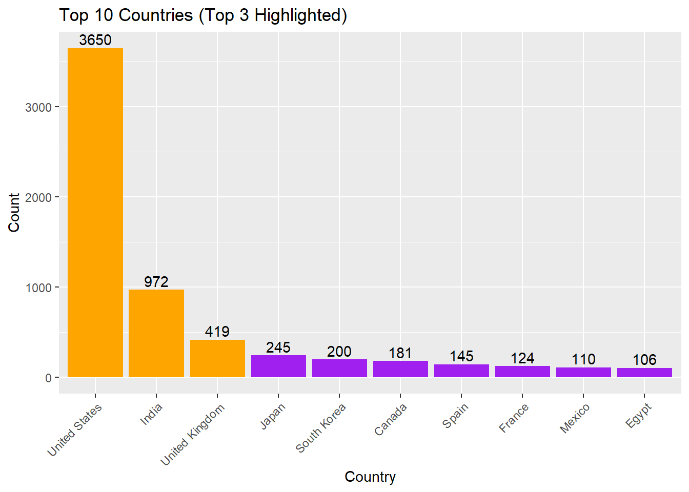

# Important
data_location <- here::here("starter-analysis-exercise","data","raw-data","exampledata.xlsx")
rawdata <- readxl::read_excel(data_location)Manuscript/Report Template for a Data Analysis Project
The structure below is one possible setup for a data analysis project (including the course project). For a manuscript, adjust as needed. You don’t need to have exactly these sections, but the content covering those sections should be addressed.
This uses MS Word as output format. See here for more information. You can switch #to other formats, like html or pdf. See the Quarto documentation for other formats.*/
1 Summary/Abstract
This study explores the hypothesis that the type of content (Movie or TV Show) and the country of origin influence the distribution of age ratings assigned to Netflix titles. Utilizing a detailed dataset containing information about Netflix titles, we conduct an extensive analysis involving data cleaning, exploratory data analysis, and statistical testing.
1.1 General Background Information
The intent of this analysis is to provide insights into how regional production practices and content types align with age rating distributions, offering valuable information for Netflix’s content acquisition and compliance strategies. This research highlights the importance of understanding content rating trends to better cater to diverse audiences and ensure appropriate content delivery.
1.2 Description of data and data source
Data is on Netflix Movies and TV Shows from Kaggle.com site. The description says: “The Netflix Titles dataset is a comprehensive compilation of movies and TV shows available on Netflix, covering various aspects such as the title type, director, cast, country of production, release year, rating, duration, genres (listed in), and a brief description. This dataset is instrumental for analyzing trends in Netflix content, understanding genre popularity, and examining the distribution of content across different regions and time periods”
The dataset contains 8,809 observations and the following 12 variables:
show_id: A unique identifier for each title.
type: The category of the title, which is either ‘Movie’ or ‘TV Show’
title: The name of the movie or TV show
director: The director(s) of the movie or TV show (Contains null values for some entries, especially TV shows where this information might not be applicable)
cast: The list of main actors/actresses in the title (Some entries might not have this information.)
country: The country or countries where the movie or TV show was produced.
date_added: The date the title was added to Netflix.
release_year: The year the movie or TV show was originally released.
rating: The age rating of the title.
duration: The duration of the title, in minutes for movies and seasons for TV shows
listed_in: The genres the title falls under.
description: A brief summary of the title.
1.3 Questions/Hypotheses to be addressed
State the research questions you plan to answer with this analysis.
“How do the type of content (Movie or TV Show) and the country of origin affect the distribution of age ratings on Netflix titles?”
This question focuses on understanding the relationship between content type, country of origin, and age ratings, which can provide valuable insights into regional production practices and content rating trends on Netflix
To cite other work (important everywhere, but likely happens first in introduction), make sure your references are in the #bibtex file specified in the YAML header above (here dataanalysis_template_references.bib) and have the right bibtex key. #Then you can include like this:
Examples of reproducible research projects can for instance be found in (McKay, Ebell, Billings, et al., 2020; McKay, Ebell, Dale, Shen, & Handel, 2020)
2 Methods
Describe your methods. That should describe the data, the cleaning processes, and the analysis approaches. You might want to provide a shorter description here and all the details in the supplement.
I will be using EDA initially and from there possibly branching out into some hypothesis testing using Chi-Square or regression to see if there is any association between genre and retention.
2.1 Data aquisition
I imported the data for Netflix Movies and TV Shows which was available on Kaggle.com site. My raw data file is available through file path folders: starter-analysis-exercise > data > raw-data > netflix_titles.xlsx
2.2 Data import and cleaning
The file path to my code file for cleaning my dataset is: starter-analysis-exercise > code > processing-code > processingfile
First I imported the data…
here are some of the initial cleaning techniques…
# Handling missing values
rawdata$director[is.na(rawdata$director)] <- "Unknown"
# Converting date formats
rawdata$date_added <- as.Date(rawdata$date_added, format = "%m/%d/%Y")
# Standardizing categorical variables
rawdata$type <- as.factor(rawdata$type)
# Display the cleaned data
head(rawdata)# A tibble: 6 × 12
show_id type title director cast country date_added release_year rating
<chr> <fct> <chr> <chr> <chr> <chr> <date> <dbl> <chr>
1 s1 Movie Dick Jo… Kirsten… <NA> United… 2021-09-25 2020 PG-13
2 s2 TV Show Blood &… Unknown Ama … South … 2021-09-24 2021 TV-MA
3 s3 TV Show Ganglan… Julien … Sami… <NA> 2021-09-24 2021 TV-MA
4 s4 TV Show Jailbir… Unknown <NA> <NA> 2021-09-24 2021 TV-MA
5 s5 TV Show Kota Fa… Unknown Mayu… India 2021-09-24 2021 TV-MA
6 s6 TV Show Midnigh… Mike Fl… Kate… <NA> 2021-09-24 2021 TV-MA
# ℹ 3 more variables: duration <chr>, listed_in <chr>, description <chr>I also needed to do some clean up when it came to content ‘type’ as it included unwanted values…
# Remove rows where 'type' is "William Wyler" or NA
cleaned_data <- rawdata[rawdata$type != "William Wyler" & rawdata$type != "Unknown" & !is.na(rawdata$type), ]Write code that reads in the file and cleans it so it’s ready for analysis. Since this will be fairly long code for most datasets, it might be a good idea to have it in one or several R scripts. If that is the case, explain here briefly what kind of cleaning/processing you do, and provide more details and well documented code somewhere (e.g. as supplement in a paper). All materials, including files that contain code, should be commented well so everyone can follow along.
2.3 Statistical analysis
Explain anything related to your statistical analyses.
The relevant variables I’ll be using during my statistical analysis to determine how regional production practices and content types align with age rating distributions will be: Country, Type, and Rating.
summary(cleaned_data) show_id type title director
Length:8809 Movie :6132 Length:8809 Length:8809
Class :character TV Show :2677 Class :character Class :character
Mode :character William Wyler: 0 Mode :character Mode :character
cast country date_added release_year
Length:8809 Length:8809 Min. :2008-01-01 Min. :1925
Class :character Class :character 1st Qu.:2018-04-06 1st Qu.:2013
Mode :character Mode :character Median :2019-07-02 Median :2017
Mean :2019-05-17 Mean :2014
3rd Qu.:2020-08-19 3rd Qu.:2019
Max. :2024-04-05 Max. :2024
NA's :11 NA's :1
rating duration listed_in description
Length:8809 Length:8809 Length:8809 Length:8809
Class :character Class :character Class :character Class :character
Mode :character Mode :character Mode :character Mode :character
3 Results
3.1 Exploratory/Descriptive analysis
# Perform the group_by and summarise operations
type_distribution <- aggregate(. ~ type, data = cleaned_data, FUN = length)
names(type_distribution)[2] <- "count"
# Plot the distribution of content types
barplot(height = type_distribution$count,
names.arg = type_distribution$type,
col = c("purple", "orange"),
main = "Distribution of Content Types - Movies v TV Shows",
xlab = "Type",
ylab = "Count",
las = 1) # las = 1 makes axis labels horizontal
We see from the distribution that it appears movies are being streamed substantially more than TV shows, but to get a better sense of this let’s represent it as a percentage instead
type_distribution <- aggregate(. ~ type, data = cleaned_data, FUN = length)
names(type_distribution)[2] <- "count"
type_distribution$percentage <- round((type_distribution$count / sum(type_distribution$count)) * 100, 1)
labels <- paste(type_distribution$type, type_distribution$percentage, "%")
pie(type_distribution$count,
labels = labels,
col = c("purple", "orange"),
main = "Percentage of Movies vs TV Shows")
Now I’d like to see which countries the Movie/TV show content originate from
library(ggplot2)Warning: package 'ggplot2' was built under R version 4.3.3country_counts <- head(sort(table(cleaned_data$country), decreasing = TRUE), 10)
# Convert to data frame for ggplot
country_df <- data.frame(
country = names(country_counts),
count = as.numeric(country_counts)
)
# Create the bar chart
p <- ggplot(country_df, aes(x = reorder(country, -count), y = count)) +
geom_bar(stat = "identity", fill = "purple") +
geom_text(aes(label = count), vjust = -0.3) +
labs(x = "Country", y = "Count", title = "Top 10 Countries (Top 3 Highlighted)") +
theme(axis.text.x = element_text(angle = 45, hjust = 1)) +
geom_bar(data = country_df[1:3, ], aes(x = country, y = count), stat = "identity", fill = "orange")
print(p)
Use a combination of text/tables/figures to explore and describe your data. Show the most important descriptive results here. Additional ones should go in the supplement. Even more can be in the R and Quarto files that are part of your project.
Table 1 shows a summary of the data.
Note the loading of the data providing a relative path using the ../../ notation. (Two dots means a folder up). You never want to specify an absolute path like C:\ahandel\myproject\results\ because if you share this with someone, it won’t work for them since they don’t have that path. You can also use the here R package to create paths. See examples of that below. I recommend the here package, but I’m showing the other approach here just in case you encounter it.
| skim_type | skim_variable | n_missing | complete_rate | factor.ordered | factor.n_unique | factor.top_counts | numeric.mean | numeric.sd | numeric.p0 | numeric.p25 | numeric.p50 | numeric.p75 | numeric.p100 | numeric.hist |
|---|---|---|---|---|---|---|---|---|---|---|---|---|---|---|
| factor | Gender | 0 | 1 | FALSE | 3 | M: 4, F: 3, O: 2 | NA | NA | NA | NA | NA | NA | NA | NA |
| numeric | Height | 0 | 1 | NA | NA | NA | 165.66667 | 15.97655 | 133 | 156 | 166 | 178 | 183 | ▂▁▃▃▇ |
| numeric | Weight | 0 | 1 | NA | NA | NA | 70.11111 | 21.24526 | 45 | 55 | 70 | 80 | 110 | ▇▂▃▂▂ |
3.2 Basic statistical analysis
To get some further insight into your data, if reasonable you could compute simple statistics (e.g. simple models with 1 predictor) to look for associations between your outcome(s) and each individual predictor variable. Though note that unless you pre-specified the outcome and main exposure, any “p<0.05 means statistical significance” interpretation is not valid.
Figure 1 shows a scatterplot figure produced by one of the R scripts.

3.3 Full analysis
Use one or several suitable statistical/machine learning methods to analyze your data and to produce meaningful figures, tables, etc. This might again be code that is best placed in one or several separate R scripts that need to be well documented. You want the code to produce figures and data ready for display as tables, and save those. Then you load them here.
Example Table 2 shows a summary of a linear model fit.
| term | estimate | std.error | statistic | p.value |
|---|---|---|---|---|
| (Intercept) | 149.2726967 | 23.3823360 | 6.3839942 | 0.0013962 |
| Weight | 0.2623972 | 0.3512436 | 0.7470519 | 0.4886517 |
| GenderM | -2.1244913 | 15.5488953 | -0.1366329 | 0.8966520 |
| GenderO | -4.7644739 | 19.0114155 | -0.2506112 | 0.8120871 |
4 Discussion
4.1 Summary and Interpretation
Summarize what you did, what you found and what it means.
4.2 Strengths and Limitations
Discuss what you perceive as strengths and limitations of your analysis.
4.3 Conclusions
What are the main take-home messages?
Include citations in your Rmd file using bibtex, the list of references will automatically be placed at the end
This paper (Leek & Peng, 2015) discusses types of analyses.
These papers (McKay, Ebell, Billings, et al., 2020; McKay, Ebell, Dale, et al., 2020) are good examples of papers published using a fully reproducible setup similar to the one shown in this template.
Note that this cited reference will show up at the end of the document, the reference formatting is determined by the CSL file specified in the YAML header. Many more style files for almost any journal are available. You also specify the location of your bibtex reference file in the YAML. You can call your reference file anything you like, I just used the generic word references.bib but giving it a more descriptive name is probably better.
5 References
Leek, J. T., & Peng, R. D. (2015). Statistics. What is the question? Science (New York, N.Y.), 347(6228), 1314–1315. https://doi.org/10.1126/science.aaa6146
McKay, B., Ebell, M., Billings, W. Z., Dale, A. P., Shen, Y., & Handel, A. (2020). Associations Between Relative Viral Load at Diagnosis and Influenza A Symptoms and Recovery. Open Forum Infectious Diseases, 7(11), ofaa494. https://doi.org/10.1093/ofid/ofaa494
McKay, B., Ebell, M., Dale, A. P., Shen, Y., & Handel, A. (2020). Virulence-mediated infectiousness and activity trade-offs and their impact on transmission potential of influenza patients. Proceedings. Biological Sciences, 287(1927), 20200496. https://doi.org/10.1098/rspb.2020.0496